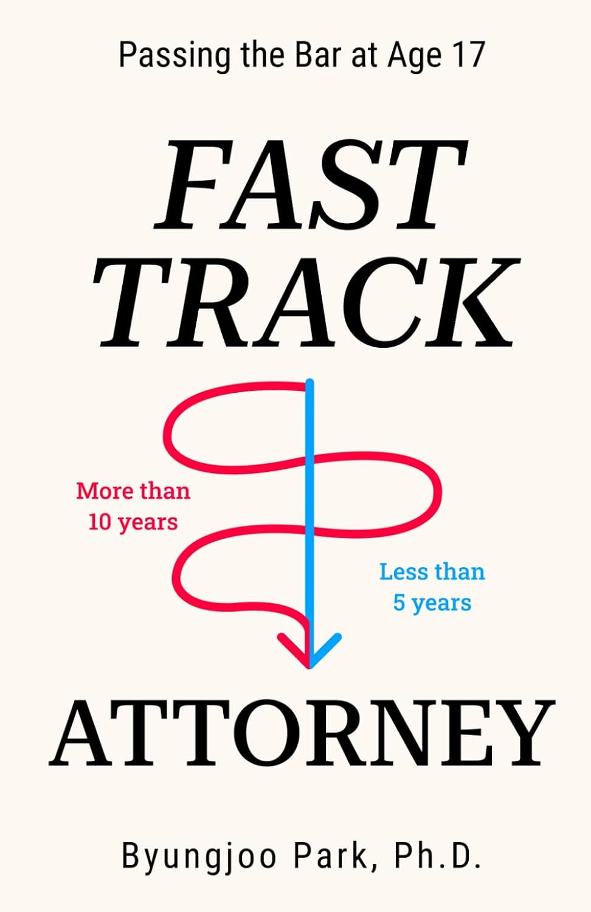
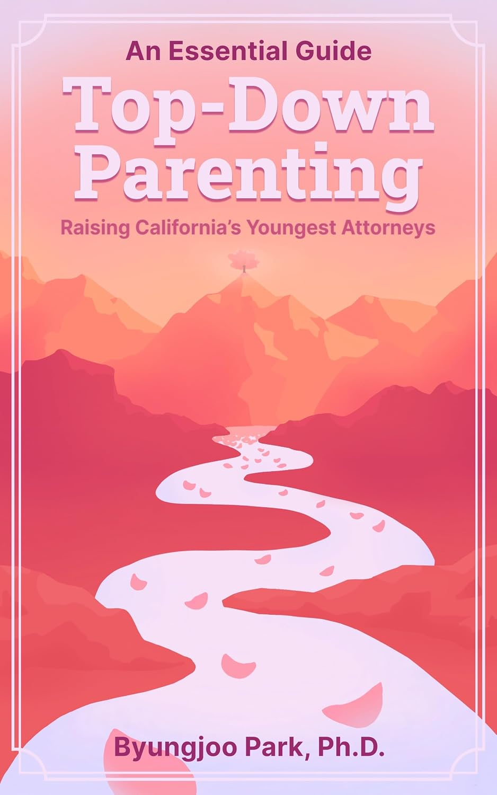

Peter Park
Peter Park passed the California Bar Exam at age 17 and is now a Deputy District Attorney with the Los Angeles County District Attorney's Office.
Read Peter's story →THE OFFICIAL WEBSITE
The story of a family that discovered an unconventional path to a California law degree and the Bar Exam—and of Peter Park and Sophia Park, who passed the California Bar Exam at age 17 and went on to careers as Los Angeles County prosecutors.

THE STORY
Peter Park passed the California Bar Exam at age 17 and is now a Deputy District Attorney with the Los Angeles County District Attorney's Office.
Read Peter's story →Sophia Park passed the California Bar Exam at 17 years and 8 months and is now a Deputy District Attorney with the Los Angeles County District Attorney's Office.
Read Sophia's story →Explore Fast-Track Attorney and An Essential Guide: Top-Down Parenting, two books about the family's accelerated educational journey.
Explore both books →BOOKS BY DR. BYUNGJOO PARK
The original account of the accelerated educational path that led Peter Park to the California Bar Exam at age 17.
Buy on Amazon
A practical guide to the parenting philosophy and educational approach behind raising California's youngest attorneys.
Buy on AmazonFEATURED COVERAGE
This site summarizes and links to published reporting. It does not reproduce the articles.
Learn how the Fast-Track path was developed and how Peter and his siblings pursued legal education at an unusually young age.
Purchase on Amazon